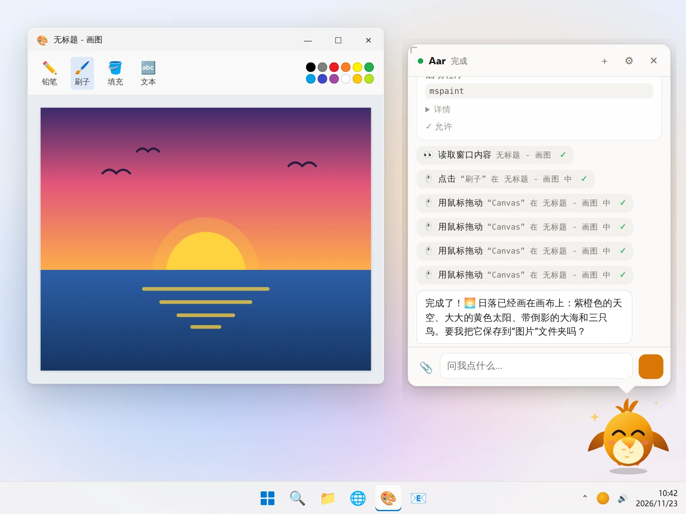
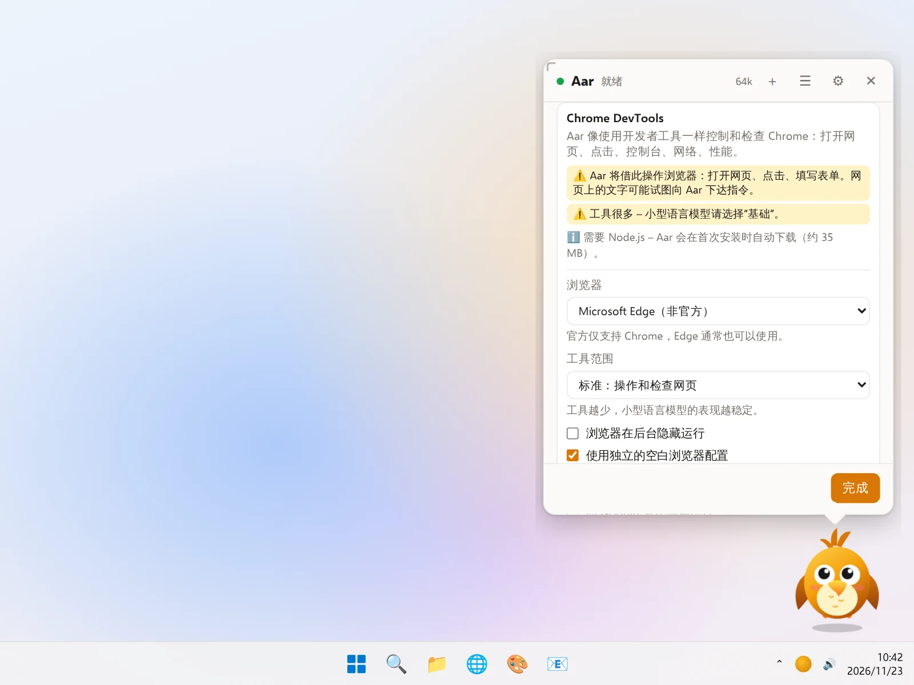
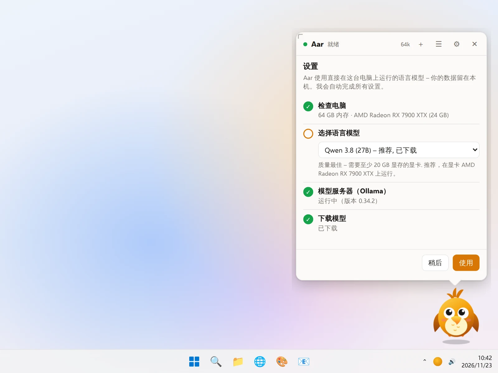

导览
仔细看看。
真实的应用，真实的界面——点击任意截图即可放大（1600×1200）。

01操作你已有的程序
“打开画图，画一幅海上日落”自带的 Windows 桌面服务器让 aar 像屏幕阅读器一样看到窗口和控件——然后点击、输入和拖动。
- 使用窗口和按钮的名称，而不是句柄
- 需要时截图查看
- 勾选一下即可关闭
02没有你的同意，什么都不会改变
“总结这份报告，并保存为 Word 文件”读取没问题，写入要先问。卡片用通俗的话说明要做什么、在哪里做——想了解更多可以查看详情。
- 允许 · 拒绝 · 始终允许
- “先询问”、“无需询问直接工作”或“只读”
- 小鹰会举起一个问号

03按内容查找照片
“给我看所有有桌子的照片”在设置中选择文件夹；本地视觉模型为每张照片生成一次描述（使用显卡约 2–5 秒）。之后的搜索立即出结果。
- 物体、人数、室内/室外、可见文字、年份
- 也支持手机拍摄的 HEIC
- 索引保存在本机，随时可以删除
04给它看一张图片
“这可能是哪里？写一句配文”📎、拖放或粘贴都可以。应用会先把图片缩小到 1280 像素，所以一张照片只需约 1000 个 token，而不是 10 000 个。
05附带坦诚警告的扩展
直接来自 aar 扩展注册表。安装前：说明它的用途。安装后：显示它实际注册了什么——挂接到操作或消息、额外的指令、有副作用的工具。
- 有风险的扩展需要再点一次确认
- 无需卸载即可停用
- 安装到你实际使用的 aar 中

06接入工具服务器
一个带设置对话框的小目录——例如 Chrome DevTools，可以选择浏览器、工具范围、后台运行，并预设 --no-usage-statistics。首次使用时会自动获取 Node.js。
- Python：网页、文档、时间
- Node：Playwright（Edge）、Chrome DevTools、记忆
- 自定义：程序 + 参数 + 环境变量，或 URL + 请求头

07一键完成设置
在新电脑上，向导会自动打开：检查内存和真实显存，推荐模型，静默安装 Ollama，并在下载模型时显示进度。

08说你的语言
德语、英语和简体中文——自动跟随 Windows，也可以在设置中选择。托盘菜单和错误信息同样会翻译。